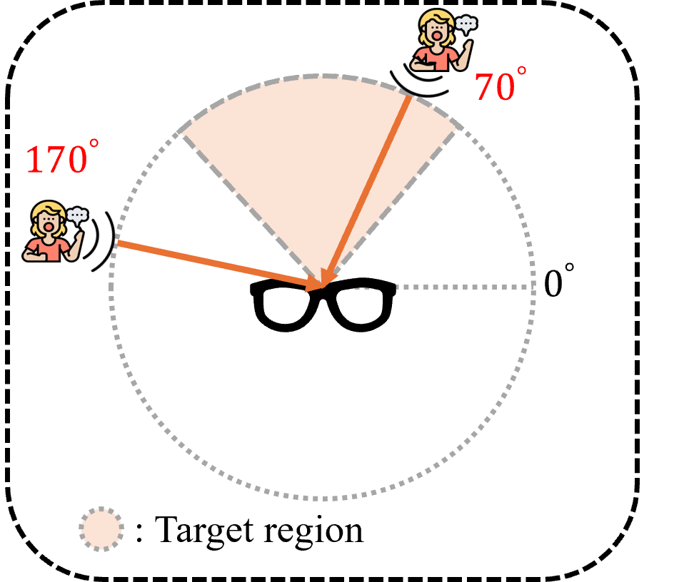

Unprocessed Audio Spectrogram
Unprocessed Audio
Unprocessed Audio Spectrogram
Unprocessed Audio

EAP Tuning Results Waveform

EAP Tuning Results Spectrogram
| α = 0 (ANC) |
α = 0.5 | α = 1 (Enhancement) |
|
|---|---|---|---|
| Enh - ANC |

EIP Tuning Results Waveform

EIP Tuning Results Spectrogram
| α = 0 (Immersion) |
α = 0.5 | α = 1 (Enhancement) |
|
|---|---|---|---|
| Enh - Imm |

IAP Tuning Results Waveform

IAP Tuning Results Spectrogram
| β = 0 (Immersion) |
β = 0.5 | β = 1 (ANC) |
|
|---|---|---|---|
| ANC - Imm |